00:03在上一期视频中，我们看到了代价函数 J 的可视化，以及如何尝试选择不同的参数 w 和 b，并看看会得到什么样的代价值。
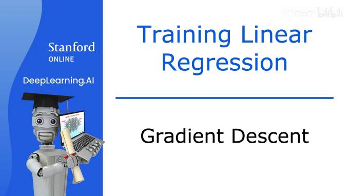
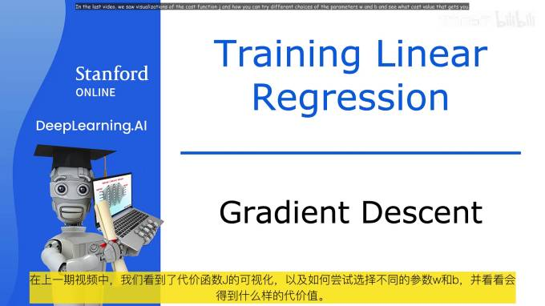
00:14如果我们有一种更系统的方法，来找到能使代价 J 括号 w，b 尽可能小的 w 和 b 的值就更好了。
00:25事实证明，有一种叫做梯度下降的算法，你可以用它来做这件事。
00:31梯度下降在机器学习中无处不在，不仅用于线性回归，还用于训练，例如，一些最先进的神经网络，模型，也称为深度学习模型。
00:45深度学习模型是你在第二门课中会学到的内容。
00:50所以，学习梯度下降这个工具，将为你奠定机器学习中最重要的基石之一。
00:57这是我们使用梯度下降要做的事情的概述。
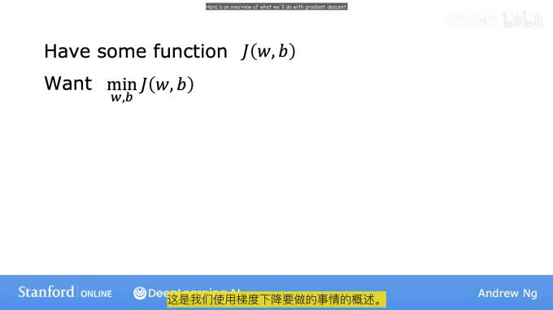
01:01你这里有想要最小化的代价函数 J 括号 w，b。
01:07在我们目前看到的例子中，这是线性回归的代价函数，但事实证明，梯度下降是一种你可以用来尝试最小化任何函数的算法，而不仅仅是线性回归的代价函数。
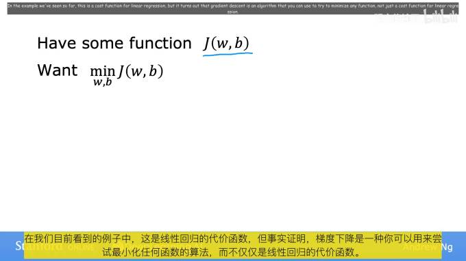
01:24为了让关于梯度下降的讨论更具普遍性，事实证明，梯度下降适用于更一般的函数，包括其他与含有两个以上参数的模型配合使用的代价函数。
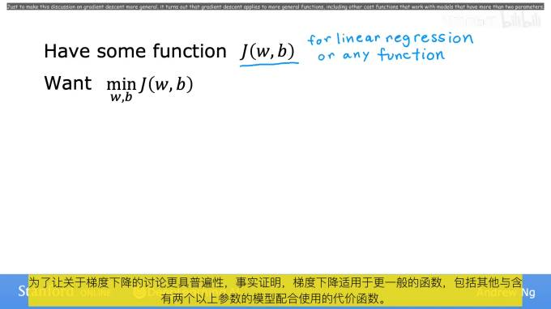
01:39举例来说，如果你有一个代价函数 J，它是 w 一，w 二，直到 wn 和 b 的函数，你的目标就是在参数 w 一到 wn 以及 b 上最小化 J。
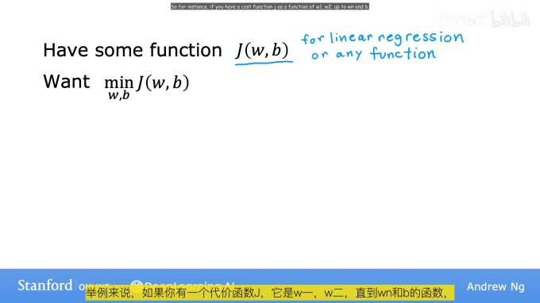
01:57换句话说，你想挑选 w 一到 wn 以及 b 的值，使得 J 取得尽可能小的值。
02:08事实证明，梯度下降就是一种你可以应用来尝试最小化这个代价函数 J 的算法。
02:17你要做的是，从对 w 和 b 的一些初始猜测值开始。
02:23在线性回归中，初始值是什么不太重要，因此一个常见的选择是将它们都设为零。
02:32举个例子，你可以设 w 为零，b 为零，作为初始猜测。
02:38使用梯度下降算法，你要做的是，每次都对参数 w 和 b 进行一点微小的改变，来尝试降低代价 J 括号 w，b，直到希望 J 最终稳定在或接近某个最小值。
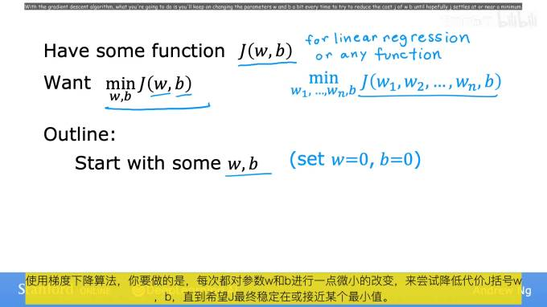
02:55有一件我需要注意的事是，对于某些函数 J，可能不是碗形或吊床形的。
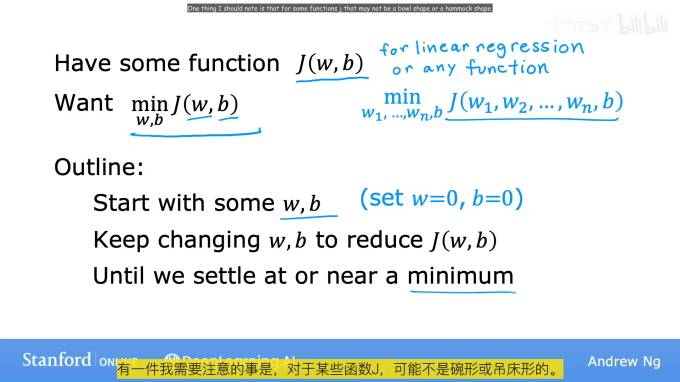
03:02有可能存在不止一个可能的最小值。
03:08让我们来看一个更复杂的曲面图 J 的例子，以了解梯度下降在做什么。
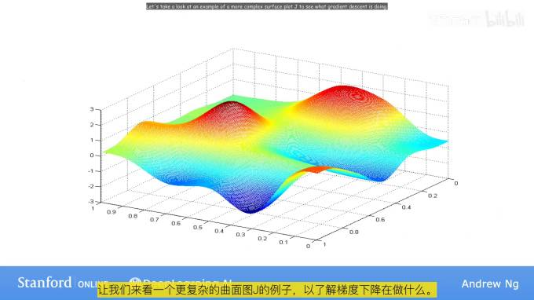
03:16这个函数不是平方误差代价函数。
03:20对于带有平方误差代价函数的线性回归，你最终总会得到一个碗形或吊床形。
03:28但这是你在训练神经网络模型时可能遇到的一种代价函数类型。
03:34注意坐标轴。
03:42对于 w 和 b 的不同取值，你会在曲面 J 上得到不同的点，曲面上某一点的高度就是代价函数的值。
03:55现在，让我们想象一下，这个曲面图实际上是一个略有起伏的户外公园或高尔夫球场的景色，其中高点是小山丘，低点是山谷，就像这样。
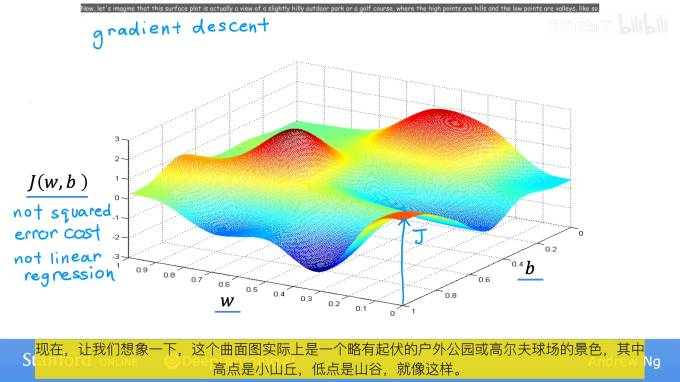
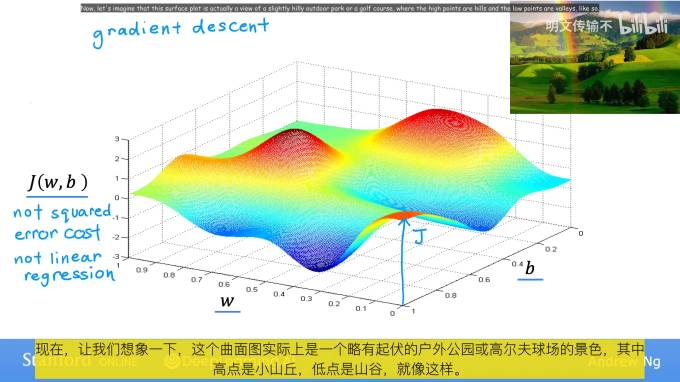
04:10我想请你想象一下，就当是你本人正站在山丘上的这个点上。
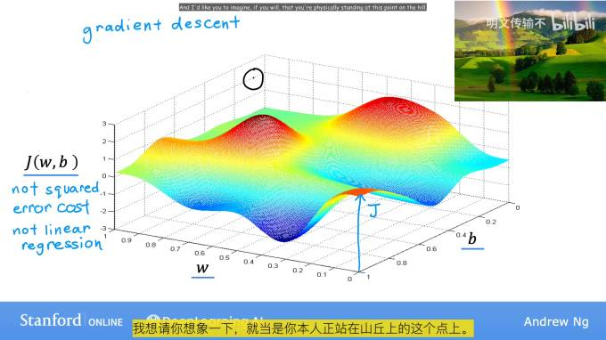
04:17如果这能帮你放松，不妨想象一下，那里有很多非常漂亮的绿草、蝴蝶和鲜花，是一座很美的山丘。
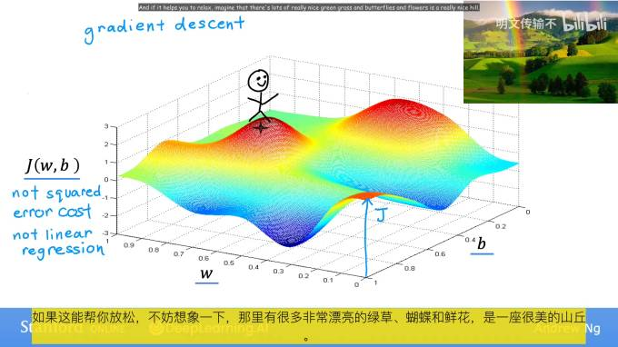
04:28你的目标是从这里出发，并尽可能高效地抵达其中一个山谷的谷底。
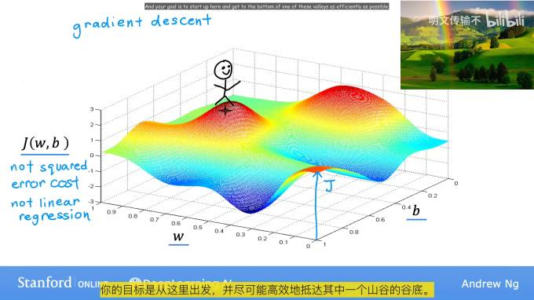
04:38那么，梯度下降算法所做的是，你会原地转个三百六十度，环顾四周，并问自己，如果我要朝某个方向迈出一小步，并且我想尽可能快地下山，前往其中一个山谷，我该选择哪个方向来迈出这一小步呢？
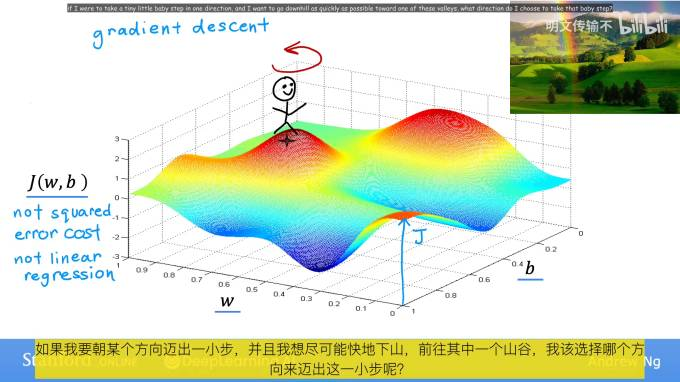
05:00嗯，如果你想尽可能高效地走下这座山丘，事实证明，如果你站在山上的这一点并环顾四周，你可能会注意到，迈出下山下一步的最佳方向大致是那个方向。
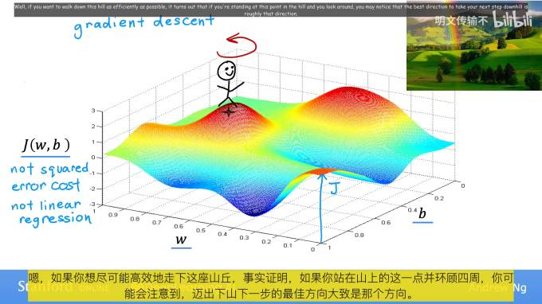
05:17从数学上讲，这就是最陡下降方向。
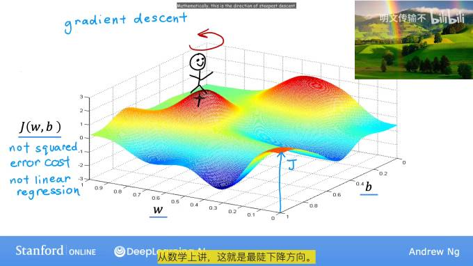
05:22这意味着，当你迈出极小的一小步时，这比朝其他任何方向可能迈出的极小的一小步，都能让你更快。
05:32所以，迈出这第一步之后，你现在到了山丘上的这个点。
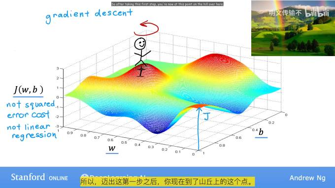
05:40站在这个新的点上，你将再次原地转个三百六十度，并问自己，为了向下走，我下一步应该朝哪个方向迈出小步。
05:53如果你这样做了，并迈出另一步，你最终会朝着那个方向移动一点，然后你可以继续前进。
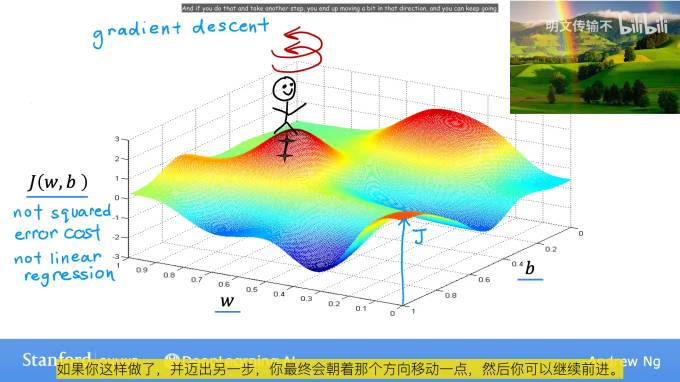
06:02从这个新的点，你可以再次环顾四周，并决定哪个方向能让你最快地下山。
06:09再迈一步，再迈一步，依此类推，直到你发现自己位于这个山谷的底部，就在这个局部最小值处。
06:19你刚刚做的就是经历了梯度下降的多个步骤。
06:24事实证明，梯度下降有一个有趣的特性。
06:28记住，你可以通过选择参数 w 和 b 的起始值，来在曲面上选择一个起始点。
06:37当你刚才执行梯度下降时，你是从这边的这个点开始的，对吧？
06:44现在，想象一下，如果你再次尝试梯度下降，但这次你选择了一个不同的起始点，选择的参数让你的起始点位于向右移动几步的这边。
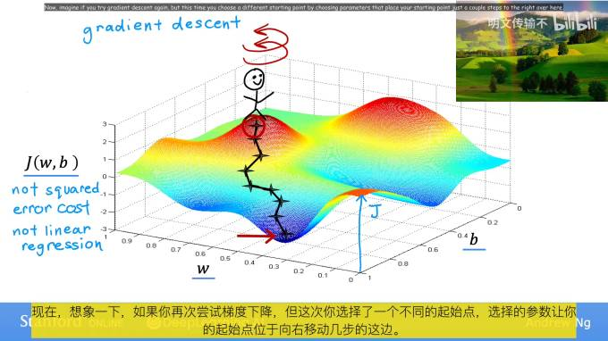
06:58如果你随后重复梯度下降的过程，这意味着你环顾四周，朝最陡下降方向迈一小步，于是你到达这里，接着你再次环顾四周，迈出另一步，以此类推。
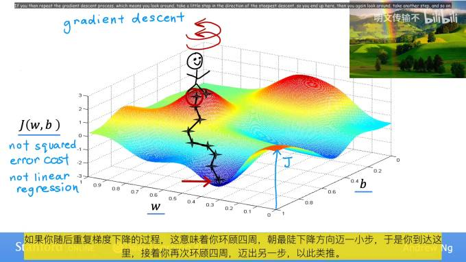
07:13而如果你第二次运行梯度下降，从我们第一次起始点向右几步的位置开始，那么你最终会抵达一个完全不同的山谷，也就是右边这里的这个不同的最小值。
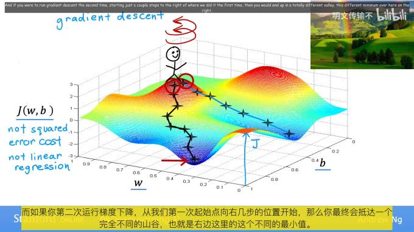
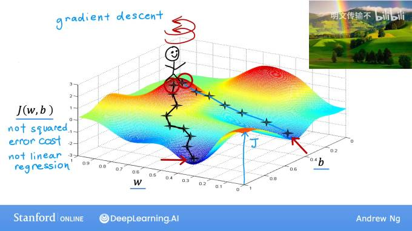
07:30第一个和第二个山谷的谷底都被称为局部最小值，因为如果你开始走向第一个山谷，梯度下降就不会带你到第二个山谷。
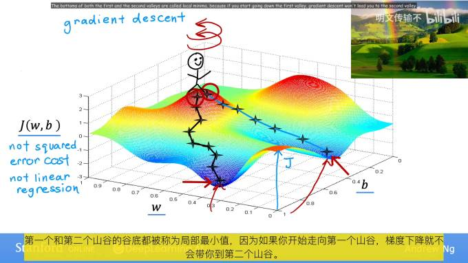
07:43而如果你开始走向第二个山谷，情况也是一样的。
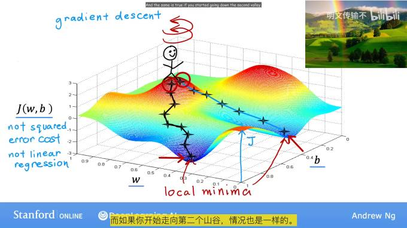
07:48你会停留在那第二个最小值处，而找不到进入第一个局部最小值的路。
07:54所以这是梯度下降算法一个有趣的特性，你以后会对此有更多了解。
08:01那么在本期视频中，你看到了梯度下降是如何帮助你走下山的。
08:07在下期视频中，让我们看看可以实现的数学表达式，来让梯度下降得以运行。